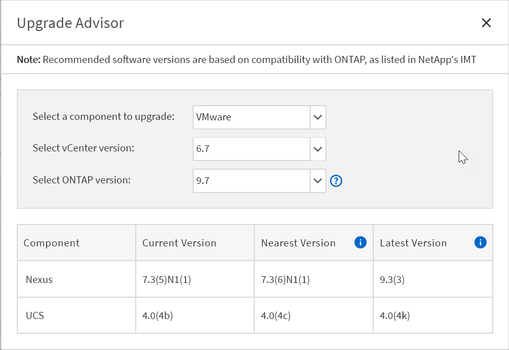
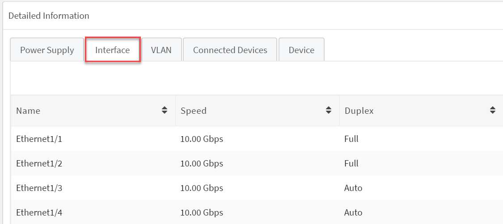
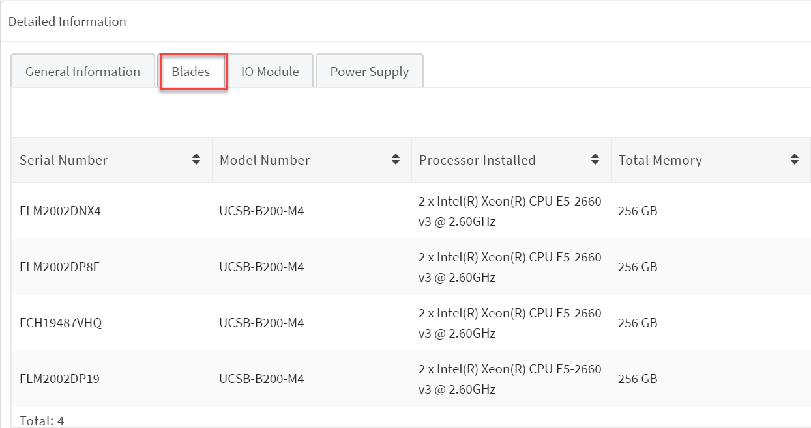
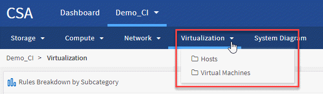

Notes de mise à jour
Notes de mise à jour
Archive des nouveautés de Converged Systems Advisor
 Suggérer des modifications
Suggérer des modifications
NetApp met régulièrement à jour Converged Systems Advisor pour vous apporter de nouvelles fonctionnalités, améliorations et correctifs.
Pour vérifier que les composants FlexPod sont pris en charge par l’agent CSA, reportez-vous à la "Matrice d’interopérabilité NetApp" (IMT).
Le contenu
Cette archive contient des informations provenant des versions suivantes :
30 avril 2020
Cette version comprend les améliorations suivantes :
Upgrade Advisor
Vous pouvez désormais vérifier la compatibilité de vos versions VMware vCenter et ONTAP avec vos composants Nexus et UCS. Pour vérifier la compatibilité, utilisez Upgrade Advisor dans le tableau de bord sous Firmware Interoperability. Toutes les versions que vous voyez sont prises en charge. 
Commutateur d’interconnexion de cluster
Cluster Interconnect Switch a été ajouté sous Firmware Interoperability dans la vue Tableau de bord. Vous pouvez désormais surveiller la prise en charge des commutateurs d’interconnexion de cluster ONTAP pour les modèles suivants :
-
Cisco Nexus 3132Q-V
-
Cisco Nexus 3232C
-
Cisco Nexus 92300YC

Dans l’agent, vous pouvez maintenant ajouter un commutateur d’interconnexion de cluster en tant que périphérique dans le menu déroulant Ajouter des informations de périphérique.

Améliorations de la carte de capacité
Des liens vers l’utilisation des ports réseau et des serveurs lames UCS ont également été ajoutés pour vous aider à surveiller et à développer votre infrastructure FlexPod. Dans le vue Tableau de bord, lorsque vous accédez à la capacité, vous verrez deux nouveaux liens.
L’utilisation des ports permet d’accéder à des informations détaillées sur les interfaces du niveau réseau. 
UCS Blade Server Utilization vous fournit des liens vers des informations détaillées sur les lames du niveau de calcul. 
Alertes liées aux diagrammes système
Vous verrez désormais des alertes dans les vues de diagramme de votre système, ce qui vous permettra de mieux surveiller votre infrastructure.
Problèmes résolus
Cette version a permis de résoudre les problèmes connus suivants :
| ID de bug | Description |
|---|---|
L’état du port du commutateur Nexus peut s’afficher de manière incorrecte dans Converged Systems Advisor. |
-
Revenir à Le contenu
3 février 2020
Cette version comprend les améliorations suivantes :
Améliorations de la navigation
-
Cette version vous permet de voir tous vos systèmes dans Afficher tous les systèmes.
-
Vous pouvez plus facilement visualiser et naviguer dans la structure de vos niveaux de composants. Vous pouvez utiliser le menu déroulant et les flèches pour afficher vos périphériques.
-
Il est également plus facile de naviguer vers et depuis la vue Tableau de bord (accueil) à l’aide d’un chemin de navigation.

Détails de l’agrégat
Dans la vue Tableau de bord, lorsque vous accédez à capacité, vous pouvez maintenant afficher un lien vers détails d’agrégat. Vous pouvez utiliser le lien fourni pour afficher des informations détaillées sur vos agrégats dans le niveau de stockage.


Problèmes résolus
Cette version a permis de résoudre les problèmes connus suivants :
| ID de bug | Description |
|---|---|
Le MetroCluster à un seul nœud n’affiche pas le module d’extension IOXM dans le résumé des règles et de la présentation sur la page des détails du cluster. |
-
Revenir à Le contenu
7 novembre 2019

|
Toutes les nouvelles fonctionnalités et améliorations de cette version sont automatiquement incluses après l’ajout de votre FlexPod dans Converged Systems Advisor. Suivez les instructions de la section "Mise en route" Pour ajouter votre FlexPod en tant qu’infrastructure convergée dans Converged Systems Advisor. |
Cette version comprend de nouvelles fonctionnalités et améliorations suivantes :
Reconnaissance de MetroCluster
Converged Systems Advisor prend désormais en charge l’ajout d’un site unique d’une MetroCluster FlexPod en tant qu’infrastructure convergée. L’analyse sera désormais capable de déterminer l’état des deux côtés du MetroCluster.
Compatibilité avec NVMe
Converged Systems Advisor exécute désormais des outils d’analytique pour vérifier la configuration du protocole NVMe pris en charge par ONTAP 9.4 et versions ultérieures.
Fonctionnalité d’interopérabilité améliorée
Converged Systems Advisor est doté d’une carte d’interopérabilité mise à jour qui permet de créer un lien vers une fenêtre contextuelle indiquant les versions actuelles, les plus proches et les dernières prises en charge pour chaque composant. Un nouveau rapport a été ajouté dans la fenêtre contextuelle pour afficher un rapport d’interopérabilité individualisé par niveau de composant.
-
Revenir à Le contenu
24 juillet 2019
Cette version comprend de nouvelles fonctionnalités et améliorations suivantes :
Prise en charge de l’ACI Cisco dans FlexPod
Converged Systems Advisor prend désormais en charge les conceptions FlexPod avec la mise en réseau ACI de Cisco. La prise en charge et la configuration de tous les périphériques de votre FlexPod seront évaluées, y compris les deux commutateurs Leaf à détermination dynamique connectés à vos autres périphériques FlexPod.
Prise en charge de plusieurs clusters au sein d’un même environnement FlexPod
Converged Systems Advisor prend désormais en charge plusieurs clusters dans un seul FlexPod. Les règles Storage ONTAP sont traitées sur tous les clusters et tous les clusters sont répercutés sur le diagramme du système.
-
Revenir à Le contenu
25 avril 2019
Cette version comprend de nouvelles fonctionnalités et améliorations suivantes :
Résolution automatique des règles ayant échoué
Converged Systems Advisor peut désormais résoudre automatiquement les problèmes qui provoquent l’échec de certaines règles. Cette fonctionnalité est automatiquement activée en redémarrant votre agent.
Affichage des règles supprimées
Vous pouvez maintenant afficher une liste globale des règles supprimées dans Converged Systems Advisor et réactiver les alertes pour les règles supprimées de la liste.
Problèmes résolus
Cette version a permis de résoudre les problèmes connus suivants :
| ID de bug | Description |
|---|---|
Il est possible que les images des diagrammes système ne s’affichent pas pour une infrastructure convergée |
|
La valeur de l’efficacité du cluster de stockage n’est pas affichée correctement |
|
L’état du port du commutateur Nexus peut s’afficher de manière incorrecte |
|
L’état de réservation d’espace s’affiche de manière incorrecte |
-
Revenir à Le contenu
28 mars 2019
Cette version a permis de résoudre les problèmes connus suivants :
| ID de bug | Description |
|---|---|
L’état du provisionnement fin n’est pas affiché correctement dans CSA |
|
Le pourcentage d’utilisation de l’espace disque n’est pas affiché correctement dans CSA |
|
Les interfaces mappées au VLAN du commutateur Nexus peuvent ne pas correspondre à la sortie réelle du périphérique dans CSA |
|
Les informations relatives à l’alimentation d’un serveur monté en rack peuvent s’afficher de manière incorrecte dans CSA |
-
Revenir à Le contenu
17 janvier 2019
Cette version comprend de nouvelles fonctionnalités et améliorations suivantes :
Prise en charge des nouveaux périphériques FlexPod
Converged Systems Advisor prend désormais en charge les dispositifs FlexPod suivants :
-
Serveurs en rack Cisco UCS C-Series
-
Commutateurs Nexus série 3000
-
Commutateurs Cisco UCS directement connectés aux contrôleurs NetApp
Pour obtenir la liste complète des périphériques pris en charge, reportez-vous à la section "Matrice d’interopérabilité NetApp".
Informations détaillées sur les hôtes et les machines virtuelles
Converged Systems Advisor fournit désormais des informations supplémentaires sur votre environnement de virtualisation. Vous pouvez afficher des informations détaillées sur des hôtes individuels et des machines virtuelles, notamment des diagrammes, une liste d’inventaire et un résumé des règles.

Expérience simplifiée pour l’ajout d’une infrastructure
L’ajout d’une infrastructure à Converged Systems Advisor est désormais plus facile. Le portail vous permet de saisir les informations étape par étape :

Importation du périphérique à l’aide d’un fichier
Vous pouvez maintenant configurer l’agent Converged Systems Advisor pour détecter votre infrastructure FlexPod en important un fichier qui contient des informations sur chaque périphérique. L’importation des périphériques est une alternative à l’ajout manuel de chaque périphérique, un par un.

Intégration avec NetApp Active IQ
Vous pouvez désormais lancer Active IQ à partir de Converged Systems Advisor. L’exemple suivant montre un lien Active IQ disponible sur la page stockage :

Problèmes résolus
Cette version a permis de résoudre les problèmes connus suivants :
| ID de bug | Description |
|---|---|
4671 |
Firefox peut cesser de répondre lorsque vous parcourez le portail Converged Systems Advisor. |
4500 |
Le portail Converged Systems Advisor ne vous déconnecte pas une fois l’intervalle de temps expiré. Vous restez connecté, mais vos systèmes FlexPod ne sont pas visible. |
2794 |
Converged Systems Advisor affiche le message « Pass » pour la règle intitulée « VMware Tools Check » (Vérification des outils VMware), même si les outils VMware n’ont pas été installés sur la machine virtuelle. |
-
Revenir à Le contenu
13 septembre 2018
Cette version de Converged Systems Advisor comprend de nouvelles fonctionnalités :
-
Une nouvelle interface utilisateur et une nouvelle expérience utilisateur permettant de simplifier les opérations FlexPod des clients
-
Validation de l’état et des meilleures pratiques pour la virtualisation VMware
-
Prise en charge des switchs Cisco MDS avec prise en charge Fibre Channel étendue